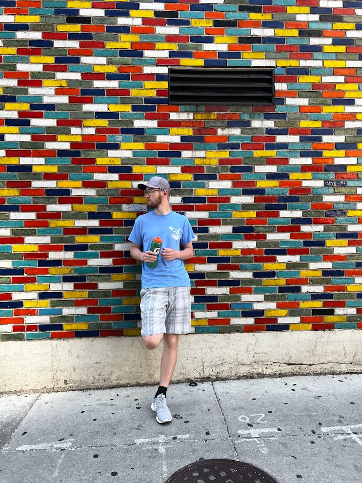
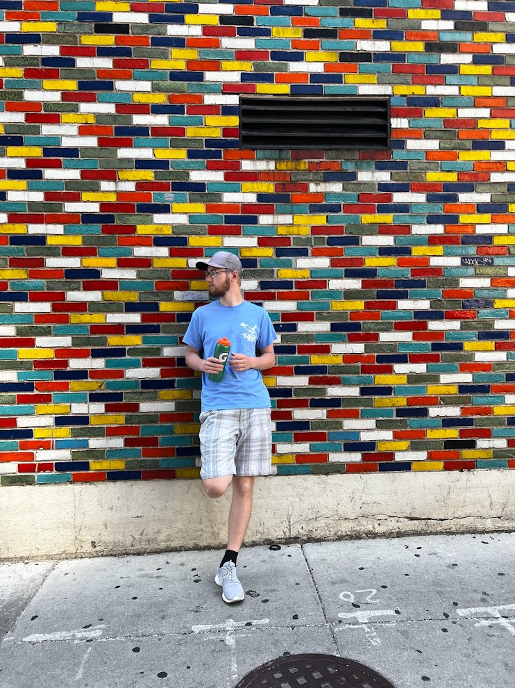

Who Am I?

My name is Patrick Sandberg and I am a senior studying Games and Interactive Media. I am hoping to persue a career creating and reiterating over video game making through design as well as art and animation.
All the information about Patrick you never knew... UNTIL NOW!

My name is Patrick Sandberg and I am a senior studying Games and Interactive Media. I am hoping to persue a career creating and reiterating over video game making through design as well as art and animation.
I play a lot of video games. Video games are that safe space where you can either become lost in a good story, or get really competitive with friends. I love video games so much I decided to make that what I do for a living. When I have free time, I love playing games from a select genre: MMO FPS games or racing games. Here is a list of some of my favorite games at the moment.
Out of all these great games, Rocket League is my #1 time consumer, and it's not even close. Essentially Rocket league is car soccer, on a closed in field, but the cars have boost- meaning cars can fly. I have been playing the game on and off since 2015, but more heavily these past 3 years. My current rank for both 2s and 3s is Champion 2(I hardly ever play 1s). Rocket League is just a game I can play for hours on end, always trying to get better while hitting insane shots from time to time.
One cool fact about my life is that I am the youngest kid in a family of 4 children. Growing up in a family with 6 people was always a movie- people going everywhere all the time. There was never a dull moment in the house. I think being the youngest in the family has its perks because I can see some of the choices my siblings make a few years before I have to make them, and I can see how to and how not to do things. One downside of being the youngest is that I am the only one in college still. Everyone else has "moved on" in life, while I still feel like I am waiting to get into my career. It's crazy now because everyone has moved away from home: North Carolina and Illinois. At least now it's my turn to get spoiled by my parents.